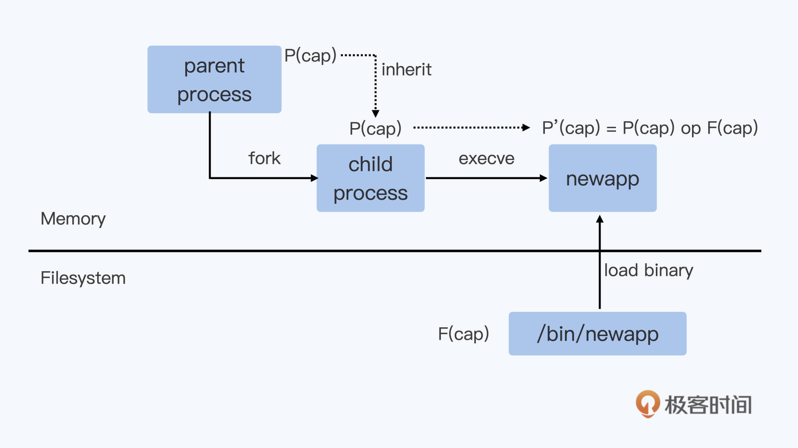
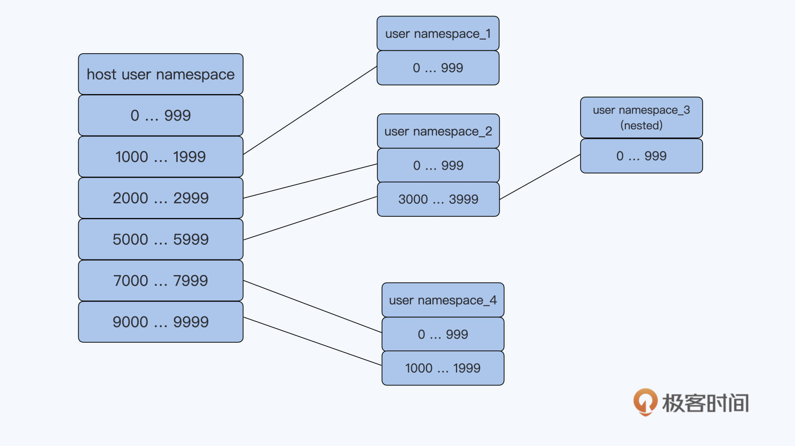

容器安全
容器安全是一个很大的话题，容器的安全性很大程度是由容器的架构特性所决定的。比如容器与宿主机共享 Linux 内核，通过 Namespace 来做资源的隔离，通过 shim/runC 的方式来启动等等。
这些容器架构特性，在你选择使用容器之后，作为使用容器的用户，其实你已经没有多少能力去对架构这个层面做安全上的改动了。你可能会说用 Kata Container、 gVisor 就是安全“容器”了。不过，Kata或者gVisor只是兼容了容器接口标准，而内部的实现完全是另外的技术了。
那么对于使用容器的用户，在运行容器的时候，在安全方面可以做些什么呢？我们主要可以从这两个方面来考虑：第一是赋予容器合理的capabilities，第二是在容器中以非root用户来运行程序。
问题再现
刚刚使用容器的同学，往往会发现用缺省 docker run 的方式启动容器后，在容器里很多操作都是不允许的，即使是以root用户来运行程序也不行。
我们用下面的 例子 来重现一下这个问题。我们先运行 make image 做个容器镜像，然后运行下面的脚本：
# docker run --name iptables -it registry/iptables:v1 bash
[root@0b88d6486149 /]# iptables -L
iptables v1.8.4 (nf_tables): Could not fetch rule set generation id: Permission denied (you must be root)
[root@0b88d6486149 /]# id
uid=0(root) gid=0(root) groups=0(root)
在这里，我们想在容器中运行 iptables 这个命令，来查看一下防火墙的规则，但是执行命令之后，你会发现结果输出中给出了"Permission denied (you must be root)"的错误提示，这个提示要求我们用root用户来运行。
不过在容器中，我们现在已经是以root用户来运行了，为什么还是不可以运行"iptables"这条命令呢？
你肯定会想到，是不是容器中又做了别的权限限制？如果你去查一下资料，就会看到启动容器有一个"privileged"的参数。我们可以试一下用上这个参数，没错，我们用了这个参数之后，iptables这个命令就执行成功了。
# docker stop iptables;docker rm iptables
iptables
iptables
# docker run --name iptables --privileged -it registry/iptables:v1 bash
[root@44168f4b9b24 /]# iptables -L
Chain INPUT (policy ACCEPT)
target prot opt source destination
Chain FORWARD (policy ACCEPT)
target prot opt source destination
Chain OUTPUT (policy ACCEPT)
target prot opt source destination
看上去，我们用了一个配置参数就已经解决了问题，似乎很容易。不过这里我们可以进一步想想，用"privileged"参数来解决问题，是不是一个合理的方法呢？用它会有什么问题吗？
要回答这些问题，我们先来了解一下"privileged"是什么意思。从Docker的 代码 里，我们可以看到，如果配置了privileged的参数的话，就会获取所有的capabilities，那什么是capabilities呢？
if ec.Privileged {
p.Capabilities = caps.GetAllCapabilities()
}
基本概念
Linux capabilities
要了解Linux capabilities的定义，我们可以先查看一下"Linux Programmer's Manual"中关于 Linux capabilities 的描述。
在Linux capabilities出现前，进程的权限可以简单分为两类，第一类是特权用户的进程（进程的有效用户ID是0，简单来说，你可以认为它就是root用户的进程），第二类是非特权用户的进程（进程的有效用户ID是非0，可以理解为非root用户进程）。
特权用户进程可以执行Linux系统上的所有操作，而非特权用户在执行某些操作的时候就会被内核限制执行。其实这个概念，也是我们通常对Linux中root用户与非root用户的理解。
从kernel 2.2开始，Linux把特权用户所有的这些“特权”做了更详细的划分，这样被划分出来的每个单元就被称为capability。
所有的capabilities都在 Linux capabilities 的手册列出来了，你也可以在内核的文件 capability.h 中看到所有capabilities的定义。
对于任意一个进程，在做任意一个特权操作的时候，都需要有这个特权操作对应的capability。
比如说，运行iptables命令，对应的进程需要有CAP_NET_ADMIN这个capability。如果要mount一个文件系统，那么对应的进程需要有CAP_SYS_ADMIN这个capability。
我还要提醒你的是，CAP_SYS_ADMIN这个capability里允许了大量的特权操作，包括文件系统，交换空间，还有对各种设备的操作，以及系统调试相关的调用等等。
在普通Linux节点上，非root用户启动的进程缺省没有任何Linux capabilities，而root用户启动的进程缺省包含了所有的Linux capabilities。
我们可以做个试验，对于root用户启动的进程，如果把CAP\_NET\_ADMIN这个capability移除，看看它是否还可以运行iptables。
在这里我们要用到 capsh 这个工具，对这个工具不熟悉的同学可以查看超链接。接下来，我们就用capsh执行下面的这个命令：
# sudo /usr/sbin/capsh --keep=1 --user=root --drop=cap_net_admin -- -c './iptables -L;sleep 100'
Chain INPUT (policy ACCEPT)
target prot opt source destination
Chain FORWARD (policy ACCEPT)
target prot opt source destination
Chain OUTPUT (policy ACCEPT)
target prot opt source destination
iptables: Permission denied (you must be root).
这时候，我们可以看到即使是root用户，如果把"CAP\_NET\_ADMIN"给移除了，那么在执行iptables的时候就会看到"Permission denied (you must be root)."的提示信息。
同时，我们可以通过/proc文件系统找到对应进程的status，这样就能确认进程中的CAP_NET_ADMIN是否已经被移除了。
# ps -ef | grep sleep
root 22603 22275 0 19:44 pts/1 00:00:00 sudo /usr/sbin/capsh --keep=1 --user=root --drop=cap_net_admin -- -c ./iptables -L;sleep 100
root 22604 22603 0 19:44 pts/1 00:00:00 /bin/bash -c ./iptables -L;sleep 100
# cat /proc/22604/status | grep Cap
CapInh: 0000000000000000
CapPrm: 0000003fffffefff
CapEff: 0000003fffffefff
CapBnd: 0000003fffffefff
CapAmb: 0000000000000000
运行上面的命令查看 /proc//status里Linux capabilities的相关参数之后，我们可以发现，输出结果中包含5个Cap参数。
这里我给你解释一下， 对于当前进程，直接影响某个特权操作是否可以被执行的参数，是"CapEff"，也就是"Effective capability sets"，这是一个bitmap，每一个bit代表一项capability是否被打开。
在Linux内核 capability.h 里把CAP_NET_ADMIN的值定义成12，所以我们可以看到"CapEff"的值是"0000003fffffefff"，第4个数值是16进制的"e"，而不是f。
这表示CAP_NET_ADMIN对应的第12-bit没有被置位了（0xefff = 0xffff & (~(1 << 12))），所以这个进程也就没有执行iptables命令的权限了。
对于进程status中其他几个capabilities相关的参数，它们还需要和应用程序文件属性中的capabilities协同工作，这样才能得到新启动的进程最终的capabilities参数的值。
我们看下面的图，结合这张图看后面的讲解：

如果我们要新启动一个程序，在Linux里的过程就是先通过fork()来创建出一个子进程，然后调用execve()系统调用读取文件系统里的程序文件，把程序文件加载到进程的代码段中开始运行。
就像图片所描绘的那样，这个新运行的进程里的相关capabilities参数的值，是由它的父进程以及程序文件中的capabilities参数值计算得来的。
具体的计算过程你可以看 Linux capabilities 的手册中的描述，也可以读一下网上的这两篇文章：
我就不对所有的进程和文件的capabilities集合参数和算法挨个做解释了，感兴趣的话你可以自己详细去看看。
这里你只要记住最重要的一点， 文件中可以设置capabilities参数值，并且这个值会影响到最后运行它的进程。 比如，我们如果把iptables的应用程序加上 CAP\_NET\_ADMIN的capability，那么即使是非root用户也有执行iptables的权限了。
$ id
uid=1000(centos) gid=1000(centos) groups=1000(centos),10(wheel)
$ sudo setcap cap_net_admin+ep ./iptables
$ getcap ./iptables
./iptables = cap_net_admin+ep
$./iptables -L
Chain INPUT (policy ACCEPT)
target prot opt source destination
Chain FORWARD (policy ACCEPT)
target prot opt source destination
DOCKER-USER all -- anywhere anywhere
DOCKER-ISOLATION-STAGE-1 all -- anywhere anywhere
ACCEPT all -- anywhere anywhere ctstate RELATED,ESTABLISHED
DOCKER all -- anywhere anywhere
ACCEPT all -- anywhere anywhere
ACCEPT all -- anywhere anywhere
…
好了，关于Linux capabilities的内容到这里我们就讲完了，其实它就是把Linux root用户原来所有的特权做了细化，可以更加细粒度地给进程赋予不同权限。
解决问题
我们搞懂了Linux capabilities之后，那么对privileged的容器也很容易理解了。 Privileged的容器也就是允许容器中的进程可以执行所有的特权操作。
因为安全方面的考虑，容器缺省启动的时候，哪怕是容器中root用户的进程，系统也只允许了15个capabilities。这个你可以查看 runC spec文档中的security 部分，你也可以查看容器init进程status里的Cap参数，看一下容器中缺省的capabilities。
# docker run --name iptables -it registry/iptables:v1 bash
[root@e54694652a42 /]# cat /proc/1/status |grep Cap
CapInh: 00000000a80425fb
CapPrm: 00000000a80425fb
CapEff: 00000000a80425fb
CapBnd: 00000000a80425fb
CapAmb: 0000000000000000
我想提醒你，当我们发现容器中运行某个程序的权限不够的时候，并不能“偷懒”把容器设置为"privileged"，也就是把所有的capabilities都赋予了容器。
因为容器中的权限越高，对系统安全的威胁显然也是越大的。比如说，如果容器中的进程有了CAP_SYS_ADMIN的特权之后，那么这些进程就可以在容器里直接访问磁盘设备，直接可以读取或者修改宿主机上的所有文件了。
所以，在容器平台上是基本不允许把容器直接设置为"privileged"的，我们需要根据容器中进程需要的最少特权来赋予capabilities。
我们结合这一讲开始的例子来说说。在开头的例子中，容器里需要使用iptables。因为使用iptables命令，只需要设置CAP_NET_ADMIN这个capability就行。那么我们只要在运行Docker的时候，给这个容器再多加一个NET_ADMIN参数就可以了。
# docker run --name iptables --cap-add NET_ADMIN -it registry/iptables:v1 bash
[root@cfedf124dcf1 /]# iptables -L
Chain INPUT (policy ACCEPT)
target prot opt source destination
Chain FORWARD (policy ACCEPT)
target prot opt source destination
Chain OUTPUT (policy ACCEPT)
target prot opt source destination
思考题
你可以查看一下你的Linux系统里ping程序文件有哪些capabilities，看看有什么办法，能让Linux普通用户没有执行ping的能力。
# 查看ping进程当前cap
getcap $(which ping)
# 设置ping进程cap
setcap -r $(which ping)
顺便举个之前使用过的例子：普通用户默认没有 tcpdump 抓包权限，可添加 net_raw、net_a dmin caps：
sudo setcap cap_net_raw,cap_net_admin+ep $(which tcpdump)
对于非privileged的容器，容器中root用户的capabilities是有限制的，因此容器中的root用户无法像宿主机上的root用户一样，拿到完全掌控系统的特权。
问题再现
说到容器中的用户（user），你可能会想到，在Linux Namespace中有一项隔离技术，也就是User Namespace。
Kubernetes v1.25 添加了对 user namespaces 的支持。我们先来看看在没有User Namespace的情况下，容器中用root用户运行，会发生什么情况。
首先，我们可以用下面的命令启动一个容器，在这里，我们把宿主机上/etc目录以volume的形式挂载到了容器中的/mnt目录下面。
# docker run -d --name root_example -v /etc:/mnt centos sleep 3600
然后，我们可以看一下容器中的进程"sleep 3600"，它在容器中和宿主机上的用户都是root，也就是说，容器中用户的uid/gid和宿主机上的完全一样。
# docker exec -it root_example bash -c "ps -ef | grep sleep"
root 1 0 0 01:14 ? 00:00:00 /usr/bin/coreutils --coreutils-prog-shebang=sleep /usr/bin/sleep 3600
# ps -ef | grep sleep
root 5473 5443 0 18:14 ? 00:00:00 /usr/bin/coreutils --coreutils-prog-shebang=sleep /usr/bin/sleep 3600
虽然容器里root用户的capabilities被限制了一些，但是在容器中，对于被挂载上来的/etc目录下的文件，比如说shadow文件，以这个root用户的权限还是可以做修改的。
# docker exec -it root_example bash
[root@9c7b76232c19 /]# ls /mnt/shadow -l
---------- 1 root root 586 Nov 26 13:47 /mnt/shadow
[root@9c7b76232c19 /]# echo "hello" >> /mnt/shadow
接着我们看看后面这段命令输出，可以确认在宿主机上文件被修改了。
# tail -n 3 /etc/shadow
grafana:!!:18437::::::
tcpdump:!!:18592::::::
hello
这个例子说明容器中的root用户也有权限修改宿主机上的关键文件。
当然在云平台上，比如说在Kubernetes里，我们是可以限制容器去挂载宿主机的目录的。
不过，由于容器和宿主机是共享Linux内核的，一旦软件有漏洞，那么容器中以root用户运行的进程就有机会去修改宿主机上的文件了。比如2019年发现的一个RunC的漏洞 CVE-2019-5736， 这导致容器中root用户有机会修改宿主机上的RunC程序，并且容器中的root用户还会得到宿主机上的运行权限。
问题分析
对于前面的问题，接下来我们就来讨论一下解决办法，在讨论问题的过程中，也会涉及一些新的概念，主要有三个。
方法一：Run as non-root user（给容器指定一个普通用户）
我们如果不想让容器以root用户运行，最直接的办法就是给容器指定一个普通用户uid。这个方法很简单，比如可以在docker启动容器的时候加上"-u"参数，在参数中指定uid/gid。
具体的操作代码如下：
# docker run -ti --name root_example -u 6667:6667 -v /etc:/mnt centos bash
bash-4.4$ id
uid=6667 gid=6667 groups=6667
bash-4.4$ ps -ef
UID PID PPID C STIME TTY TIME CMD
6667 1 0 1 01:27 pts/0 00:00:00 bash
6667 8 1 0 01:27 pts/0 00:00:00 ps -ef
还有另外一个办法，就是我们在创建容器镜像的时候，用Dockerfile为容器镜像里建立一个用户。
为了方便你理解，我还是举例说明。就像下面例子中的nonroot，它是一个用户名，我们用USER关键字来指定这个nonroot用户，这样操作以后，容器里缺省的进程都会以这个用户启动。
这样在运行Docker命令的时候就不用加"-u"参数来指定用户了。
# cat Dockerfile
FROM centos
RUN adduser -u 6667 nonroot
USER nonroot
# docker build -t registry/nonroot:v1 .
…
# docker run -d --name root_example -v /etc:/mnt registry/nonroot:v1 sleep 3600
050809a716ab0a9481a6dfe711b332f74800eff5fea8b4c483fa370b62b4b9b3
# docker exec -it root_example bash
[nonroot@050809a716ab /]$ id
uid=6667(nonroot) gid=6667(nonroot) groups=6667(nonroot)
[nonroot@050809a716ab /]$ ps -ef
UID PID PPID C STIME TTY TIME CMD
nonroot 1 0 0 01:43 ? 00:00:00 /usr/bin/coreutils --coreutils-prog-shebang=sleep /usr/bin/sleep 3600
在容器中使用普通用户运行之后，我们再看看，现在能否修改被挂载上来的/etc目录下的文件? 显然，现在不可以修改了。
[nonroot@050809a716ab /]$ echo "hello" >> /mnt/shadow
bash: /mnt/shadow: Permission denied
那么是不是只要给容器中指定了一个普通用户，这个问题就圆满解决了呢？其实在云平台上，这么做还是会带来别的问题，我们一起来看看。
由于用户uid是整个节点中共享的，那么在容器中定义的uid，也就是宿主机上的uid，这样就很容易引起uid的冲突。
比如说，多个客户在建立自己的容器镜像的时候都选择了同一个uid 6667。那么当多个客户的容器在同一个节点上运行的时候，其实就都使用了宿主机上uid 6667。
我们都知道，在一台Linux系统上，每个用户下的资源是有限制的，比如打开文件数目（open files）、最大进程数目（max user processes）等等。一旦有很多个容器共享一个uid，这些容器就很可能很快消耗掉这个uid下的资源，这样很容易导致这些容器都不能再正常工作。
要解决这个问题，必须要有一个云平台级别的uid管理和分配，但选择这个方法也要付出代价。因为这样做是可以解决问题，但是用户在定义自己容器中的uid的时候，他们就需要有额外的操作，而且平台也需要新开发对uid平台级别的管理模块，完成这些事情需要的工作量也不少。
方法二：User Namespace（用户隔离技术的支持）
那么在没有使用User Namespace的情况，对于容器平台上的用户管理还是存在问题。你可能会想到，我们是不是应该去尝试一下User Namespace?
好的，我们就一起来看看使用User Namespace对解决用户管理问题有没有帮助。首先，我们简单了解一下 User Namespace 的概念。
User Namespace隔离了一台Linux节点上的User ID（uid）和Group ID（gid），它给Namespace中的uid/gid的值与宿主机上的uid/gid值建立了一个映射关系。经过User Namespace的隔离，我们在Namespace中看到的进程的uid/gid，就和宿主机Namespace中看到的uid和gid不一样了。
你可以看下面的这张示意图，应该就能很快知道User Namespace大概是什么意思了。比如namespace_1里的uid值是0到999，但其实它在宿主机上对应的uid值是1000到1999。
还有一点你要注意的是，User Namespace是可以嵌套的，比如下面图里的namespace_2里可以再建立一个namespace_3，这个嵌套的特性是其他Namespace没有的。

我们可以启动一个带User Namespace的容器来感受一下。这次启动容器，我们用一下 podman 这个工具，而不是Docker。
跟Docker相比，podman不再有守护进程dockerd，而是直接通过fork/execve的方式来启动一个新的容器。这种方式启动容器更加简单，也更容易维护。
Podman的命令参数兼容了绝大部分的docker命令行参数，用过Docker的同学也很容易上手podman。你感兴趣的话，可以跟着这个 手册 在你自己的Linux系统上装一下podman。
那接下来，我们就用下面的命令来启动一个容器：
# podman run -ti -v /etc:/mnt --uidmap 0:2000:1000 centos bash
我们可以看到，其他参数和前面的Docker命令是一样的。
这里我们在命令里增加一个参数，"--uidmap 0:2000:1000"，这个是标准的User Namespace中uid的映射格式："ns_uid:host_uid:amount"。
那这个例子里的"0:2000:1000"是什么意思呢？我给你解释一下。
第一个0是指在新的Namespace里uid从0开始，中间的那个2000指的是Host Namespace里被映射的uid从2000开始，最后一个1000是指总共需要连续映射1000个uid。
所以，我们可以得出， 这个容器里的uid 0是被映射到宿主机上的uid 2000的。 这一点我们可以验证一下。
首先，我们先在容器中以用户uid 0运行一下 sleep 这个命令：
# id
uid=0(root) gid=0(root) groups=0(root)
# sleep 3600
然后就是第二步，到宿主机上查看一下这个进程的uid。这里我们可以看到，进程uid的确是2000了。
# ps -ef |grep sleep
2000 27021 26957 0 01:32 pts/0 00:00:00 /usr/bin/coreutils --coreutils-prog-shebang=sleep /usr/bin/sleep 3600
第三步，我们可以再回到容器中，仍然以容器中的root对被挂载上来的/etc目录下的文件做操作，这时可以看到操作是不被允许的。
# echo "hello" >> /mnt/shadow
bash: /mnt/shadow: Permission denied
# id
uid=0(root) gid=0(root) groups=0(root)
好了，通过这些操作以及和前面User Namespace的概念的解释，我们可以总结出容器使用User Namespace有两个好处。
第一，它把容器中root用户（uid 0）映射成宿主机上的普通用户。
作为容器中的root，它还是可以有一些Linux capabilities，那么在容器中还是可以执行一些特权的操作。而在宿主机上uid是普通用户，那么即使这个用户逃逸出容器Namespace，它的执行权限还是有限的。
第二，对于用户在容器中自己定义普通用户uid的情况，我们只要为每个容器在节点上分配一个uid范围，就不会出现在宿主机上uid冲突的问题了。
因为在这个时候，我们只要在节点上分配容器的uid范围就可以了，所以从实现上说，相比在整个平台层面给容器分配uid，使用User Namespace这个办法要方便得多。
这里我额外补充一下，前面我们说了Kubernetes目前还不支持User Namespace，如果你想了解相关工作的进展，可以看一下社区的这个 PR。
方法三：rootless container（以非root用户启动和管理容器）
前面我们已经讨论了，在容器中以非root用户运行进程可以降低容器的安全风险。除了在容器中使用非root用户，社区还有一个rootless container的概念。
这里rootless container中的"rootless"不仅仅指容器中以非root用户来运行进程，还指以非root用户来创建容器，管理容器。也就是说，启动容器的时候，Docker或者podman是以非root用户来执行的。
这样一来，就能进一步提升容器中的安全性，我们不用再担心因为containerd或者RunC里的代码漏洞，导致容器获得宿主机上的权限。
我们可以参考redhat blog里的这篇 文档， 在宿主机上用redhat这个用户通过podman来启动一个容器。在这个容器中也使用了User Namespace，并且把容器中的uid 0映射为宿主机上的redhat用户了。
$ id
uid=1001(redhat) gid=1001(redhat) groups=1001(redhat)
$ podman run -it ubi7/ubi bash ### 在宿主机上以redhat用户启动容器
[root@206f6d5cb033 /]# id ### 容器中的用户是root
uid=0(root) gid=0(root) groups=0(root)
[root@206f6d5cb033 /]# sleep 3600 ### 在容器中启动一个sleep 进程
# ps -ef |grep sleep ###在宿主机上查看容器sleep进程对应的用户
redhat 29433 29410 0 05:14 pts/0 00:00:00 sleep 3600
目前Docker和podman都支持了rootless container，Kubernetes对 rootless container支持 的工作也在进行中。